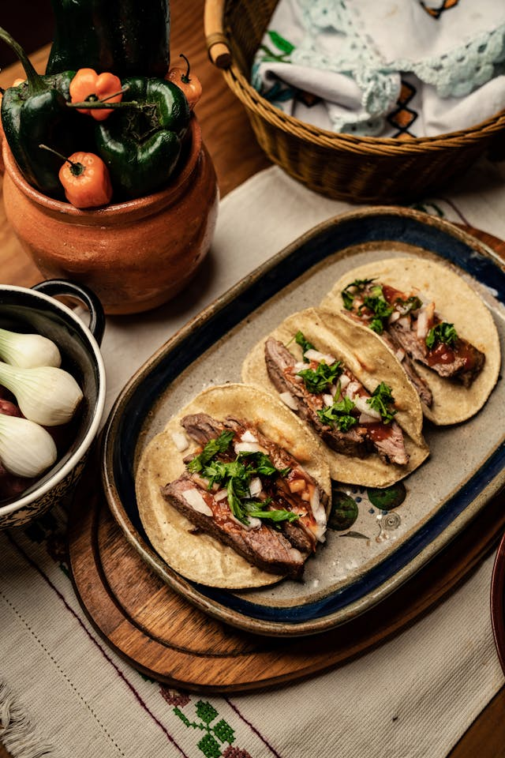

Home
Beef Tacos

Description
Quick skillet beef tacos with a flavorful, lightly seasoned beef and fresh toppings.
Ingredients
- 1lb ground beef
- 1 packet taco seasoning
- 1/2 cup water
- 8 small tortillas
- Toppings: shredded lettuce, diced tomatoes, shredded cheese, diced onions, salsa, sour cream, chopped cilantro, lime wedges
Steps
- In a skillet over medium heat, cook the ground beef until browned. Drain excess fat.
- Add seasoning and water. Simmer 5–7 minutes, until sauce thickens slightly.
- Warm tortillas in a dry skillet or microwave.
- Assemble tacos: beef, cheese, lettuce, tomatoes, onions, salsa